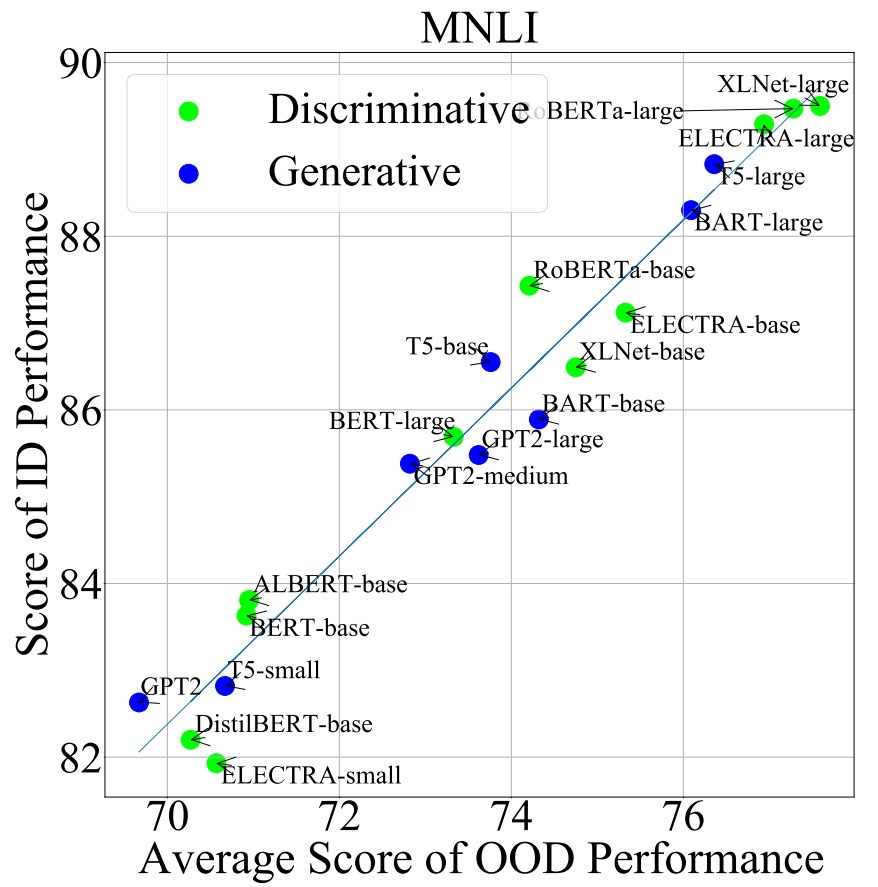
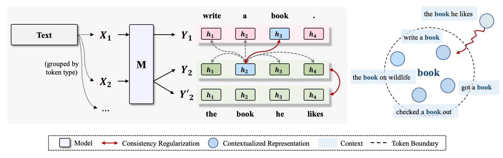
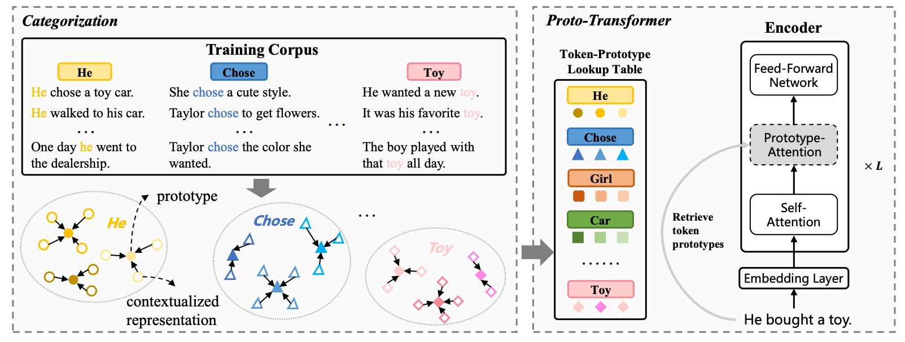
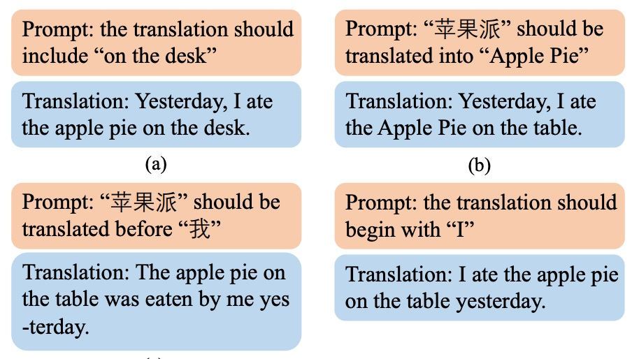
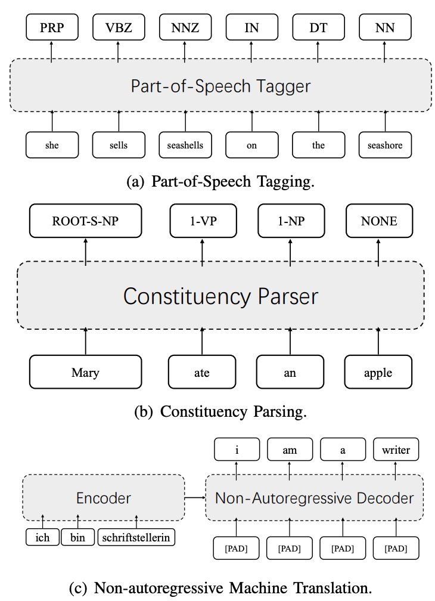

|
Hello! My name is Yafu Li, and I am a fourth-year PhD student under joint training of Zhejiang University and Westlake University, under the supervision of Prof. Yue Zhang.
Email / Google Scholar / Semantic Scholar / Twitter / Github |
{kind=link}
|
My research focuses on machine translation and natural language generation, with a recent focus on LLM-related topics. * denotes equal contributions. |

|
Yafu Li, Qintong Li, Leyang Cui, Wei Bi, Longyue Wang, Linyi Yang, Shuming Shi, Yue Zhang ACL, 2024 Github / Paper We present a comprehensive benchmark dataset designed to assess the proficiency of machine-generated text detectors amidst real-world scenarios. |

|
Yafu Li*, Zhilin Wang*, Leyang Cui, Wei Bi, Shumin Shi, Yue Zhang ACL Findings, 2024 Github / Paper We propose a novel task to identify "AI-touched" text spans in a fine-grained manner. |

|
Yafu Li*, Huajian Zhang*, Jianhao Yan, Yongjing Yin, Yue Zhang ACL Findings, 2024 Github / Paper We present a systematic and comprehensive evaluation of NAT methods against AT. |

|
Yue Zhang, Yafu Li, Leyang Cui, Deng Cai, Lemao Liu, Tingchen Fu, Xinting Huang, Enbo Zhao, Yu Zhang, Yulong Chen, Longyue Wang, Anh Tuan Luu, Wei Bi, Freda Shi, Shuming Shi preprint Github / Paper A survey of hallucination in LLMs. |

|
Yafu Li, Leyang Cui, Jianhao Yan, Yongjing Yin, Wei Bi, Shuming Shi, Yue Zhang ACL, 2023, Best Paper Nomination (1.6%) Github / Paper We propose a syntax-guided generation schema, which generates the sequence guided by a constituency parse tree in a top-down direction. |
|  |
Linyi Yang, Shuibai Zhang, Libo Qin, Yafu Li, Yidong Wang, Hanmeng Liu, Jindong Wang, Xing Xie, Yue Zhang ACL Findings, 2023 Github / Paper We present the first attempt at creating a unified benchmark named GLUE-X for evaluating OOD robustness in NLP models |
|  |
Yongjing Yin, Jiali Zeng, Yafu Li, Fandong Meng, Jie Zhou, Yue Zhang ACL, 2023 Github / Paper We propose to boost compositional generalization of neural models through consistency regularization training. |

|
Yafu Li, Leyang Cui, Yongjing Yin, Yue Zhang EMNLP, 2022 Github / Paper We propose multi-granularity optimization for non-autoregressive translation, which collects model behaviors on translation segments of various granularities and integrates feedback for backpropagation. |
|  |
Yongjing Yin, Yafu Li, Fandong Meng, Jie Zhou, Yue Zhang COLING, 2022 Paper Learning of semantics of atoms and compositions can be improved by introducing categorization to the source contextualized representations. |
|  |
Yafu Li, Yongjing Yin, Jing Li, Yue Zhang ACL Fidings, 2022 Github / Paper Versatile prompts can be effectively integrated into one single translation model. |
|  |
Leyang Cui*, Yafu Li*, Yue Zhang TASLP Paper We extend Label attention network (LAN) to general sequence labeling tasks including non-autoregressive translation. |

|
Yafu Li, Yongjing Yin, Yulong Chen, Yue Zhang ACL, 2021 Github / Paper Neural machine translation suffers poor compositionality. |
|
PhD candidate in Computer Science, Zhejiang University and Westlake University (2020.9-now). Master of Science in Artificial Intelligence, University of Edinburgh (2017.9-2018.11). Bachelor of Engineering in Electronic Information Engineering, Wuhan University (2013.9-2017.6). |
|
Research Intern at Tencent AI lab (2022.10-2024.5). Algorithem Engineer at Noah Ark'slab, Huawei (2018.12-2020.6). Software Engineering Intern at VMware, Beijing (2016.9-2017.5). |
|
Reviewer: COLING 2022, EMNLP 2022, ACL 2023, EMNLP 2023, ACL ARR, IJCAI 2024. |
|
Website's code is from Jon Barron. |